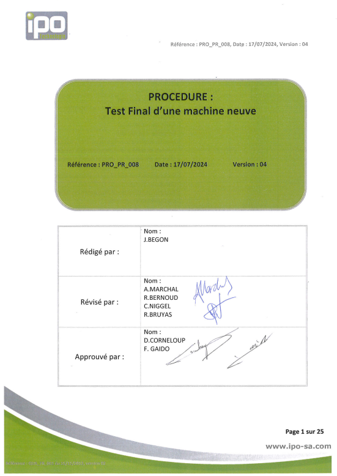
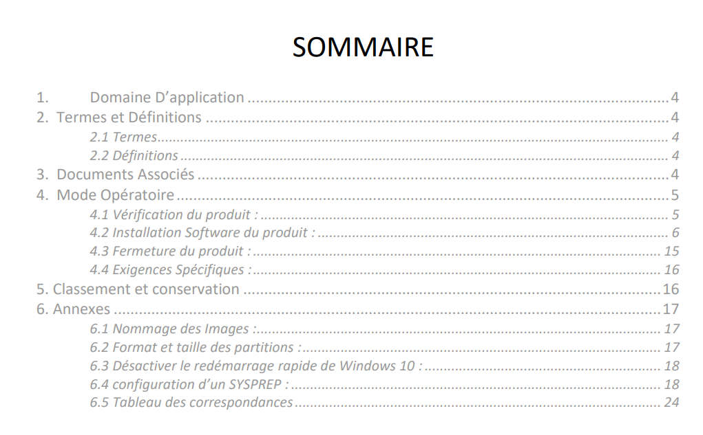
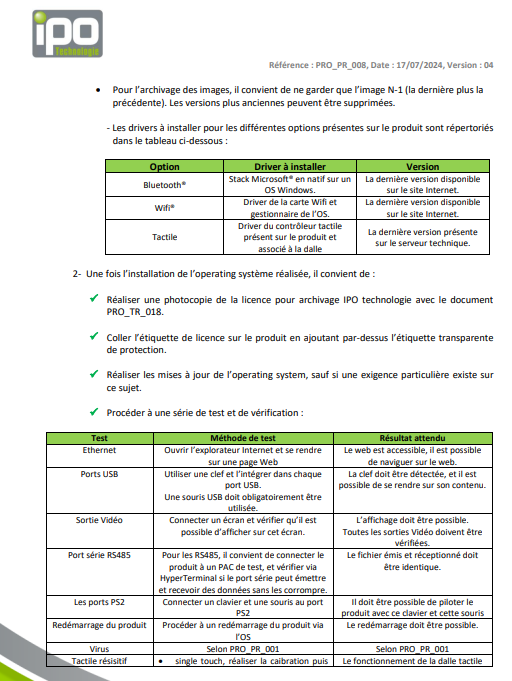
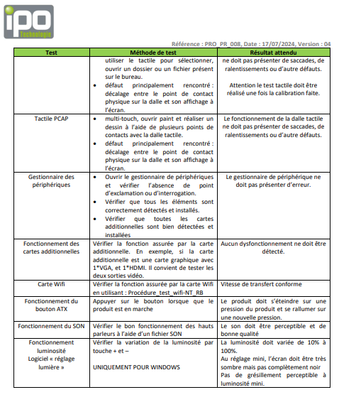
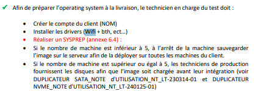

Exécuter la mise en service d’un système en respectant la procédure
Lors de mon alternance chez IPO Technologie, j’interviens en production, au service qualité,
en tant que technicien test final. Mon rôle est de préparer, contrôler et valider des machines
avant leur livraison au client.
Contexte du poste
Dans le cadre de mon alternance chez IPO Technologie, je travaille en partie en production,
plus précisément au service qualité, en tant que technicien test final. Ce poste intervient
après la production des machines.
L’objectif est de vérifier que chaque produit fonctionne correctement, qu’il respecte les demandes
du client et qu’il peut être livré dans un état conforme.
Objectif :
mettre en service les machines produites, appliquer les réglages nécessaires, vérifier leur bon
fonctionnement et s’assurer qu’elles respectent les exigences du client avant livraison.
Procédure interne
La mise en service d’un panel-PC suit une procédure interne de test final. Cette procédure sert
de référence pour contrôler les machines neuves avant leur expédition.

Aperçu de la procédure interne de test final
Vérification de la machine
Dans un premier temps, je vérifie que la machine correspond à la configuration demandée.
Cela peut concerner le type de produit, la carte CPU, la mémoire, le stockage, les options
présentes, comme le Wi-Fi, le Bluetooth ou la dalle tactile, ainsi que l’état général de la machine.
Si un dossier client existe, il doit être pris en compte, car certains clients demandent des
réglages ou des installations particulières.
Mise en service logicielle
Ensuite, je réalise la mise en service logicielle de la machine. Selon la demande client,
j’installe ou je déploie le système d’exploitation souhaité, le plus souvent Windows 11 Pro
ou Windows IoT.
Une fois l’installation terminée, je prépare l’environnement utilisateur. Je crée une session
administrateur au nom de l’entreprise cliente, je supprime les comptes inutiles si nécessaire,
je renomme la machine dans Windows et j’active la licence du système d’exploitation.
Contrôles logiciels et matériels
Je vérifie ensuite le bon fonctionnement des éléments logiciels et matériels. Cela comprend
notamment le Wi-Fi et le Bluetooth lorsque ces options sont demandées.
Si un périphérique n’est pas correctement reconnu ou ne fonctionne pas, j’installe les pilotes
nécessaires. Je vérifie également le gestionnaire de périphériques afin de m’assurer qu’il ne
présente pas d’erreur et que tous les éléments attendus sont bien détectés.
Affichage, son et luminosité
Pour les panel-PC, je réalise aussi les vérifications liées à l’affichage et à l’interface utilisateur.
J’installe le logiciel interne “Lumière”, développé par IPO Technologie, qui permet de gérer
la luminosité de l’écran.
Je vérifie que la variation de luminosité fonctionne correctement. Je contrôle également le son,
aussi bien au niveau des haut-parleurs internes que de la prise jack lorsque celle-ci est présente.
Dalle tactile et paramètres complémentaires
Une partie importante de la mise en service concerne la dalle tactile. Selon le modèle de machine
produit, le firmware ou les paramètres de la dalle tactile peuvent être différents. Je dois donc
installer ou flasher le firmware adapté, puis vérifier que le tactile fonctionne correctement.
Toutes les machines nécessitent également des réglages complémentaires dans Windows ou dans le
gestionnaire de périphériques. Ces réglages peuvent concerner les pilotes, les périphériques réseau,
le Wake-on-LAN, les options d’alimentation ou certains paramètres spécifiques au client.
Installation OSWindows 11 Pro / IoTDriversWi-Fi / BluetoothDalle tactileSonLuminositéWake-on-LAN
Respect de la procédure et des dossiers client
Cette mission demande de respecter une démarche précise de mise en service, tout en étant capable
de s’adapter aux particularités de chaque machine et de chaque client. Les contrôles réalisés
permettent de détecter rapidement un problème de pilote, une option absente, une mauvaise
configuration ou un dysfonctionnement matériel ou logiciel.
Même si j’ai appris une grande partie du poste par la pratique et par l’accompagnement des techniciens,
je ne travaille pas uniquement de mémoire. Lorsque je ne connais pas une machine, lorsqu’une configuration
est spécifique ou lorsque j’ai un doute sur une opération à réaliser, je peux me référer au dossier client
ou à la procédure interne de test final.
Ces documents me permettent de vérifier les réglages attendus, les options à contrôler, les exigences
particulières du client et les étapes à respecter afin de réaliser une mise en service conforme.
Preuves et illustrations
Pour illustrer cette compétence, je présente uniquement quelques extraits ciblés
de la procédure de test final utilisée en production. Je ne présente pas le document
complet, car il s’agit d’une procédure interne à l’entreprise. Les extraits choisis
permettent de montrer l’organisation de la mise en service, les contrôles réalisés
et la préparation logicielle de la machine.
Procédure interne : page de garde de la procédure de test final utilisée
pour les machines neuves en sortie de production.

Sommaire : organisation générale de la procédure avec les étapes de
vérification du produit, d’installation logicielle, de fermeture et d’exigences spécifiques.
Contrôles réalisés lors du test final
Lors du test final, plusieurs fonctions sont vérifiées afin de s’assurer que la machine
est prête à être livrée au client. Ces contrôles permettent de valider à la fois le bon
fonctionnement matériel, logiciel et les options demandées.
Gestionnaire de périphériques :
vérification de l’absence d’erreur, de point d’exclamation ou de périphérique non reconnu.
Wi-Fi / Bluetooth :
contrôle du fonctionnement des options demandées par le client et installation des pilotes si nécessaire.
Dalle tactile :
vérification du fonctionnement du tactile, de la calibration et de l’absence de décalage.
Son :
contrôle des haut-parleurs internes et de la prise jack lorsque celle-ci est présente.
Luminosité :
installation et test du logiciel interne “Lumière” permettant de régler la luminosité de l’écran.
USB / Ethernet / sorties vidéo :
vérification des connectiques principales selon la configuration de la machine.

Extrait du tableau de tests : contrôle des drivers à installer selon
les options présentes, puis début des vérifications fonctionnelles après installation de l’OS.

Suite du tableau de tests : vérification du tactile, du gestionnaire
de périphériques, du Wi-Fi, du bouton ATX, du son et du logiciel de luminosité.
Préparation logicielle avant livraison
Une fois l’OS installé, la machine doit être préparée pour le client. Cette étape comprend
notamment la création du compte client, l’installation des drivers, la préparation de l’image
système si nécessaire et la vérification des réglages avant livraison.

Préparation de l’OS : création du compte client, installation des drivers,
préparation système et application des exigences nécessaires avant livraison.
Exigences spécifiques client
Certains clients ont des exigences particulières. Dans ce cas, le bureau d’études prépare un dossier client
indiquant les réglages ou modifications à appliquer. Ces exigences viennent s’ajouter à la procédure standard.
En cas de doute ou de machine inconnue, je peux donc m’appuyer sur la procédure interne et sur le dossier
client pour travailler correctement.
Bilan personnel
Ce travail illustre directement la compétence “Exécuter la mise en service d’un système en respectant
la procédure”, car il repose sur l’application d’une procédure qualité en production.
Je dois préparer la machine, installer le système demandé, appliquer les réglages nécessaires, vérifier
les fonctions principales, prendre en compte les exigences spécifiques du client et m’assurer que le produit
est conforme avant livraison.
Cette expérience m’a permis de gagner en autonomie, de mieux comprendre les étapes de validation d’un produit
industriel et de développer une méthode de travail rigoureuse, basée sur les procédures internes et les dossiers
techniques disponibles.
IPO Technologie – Alternance BUT GEII / Parcours ESE